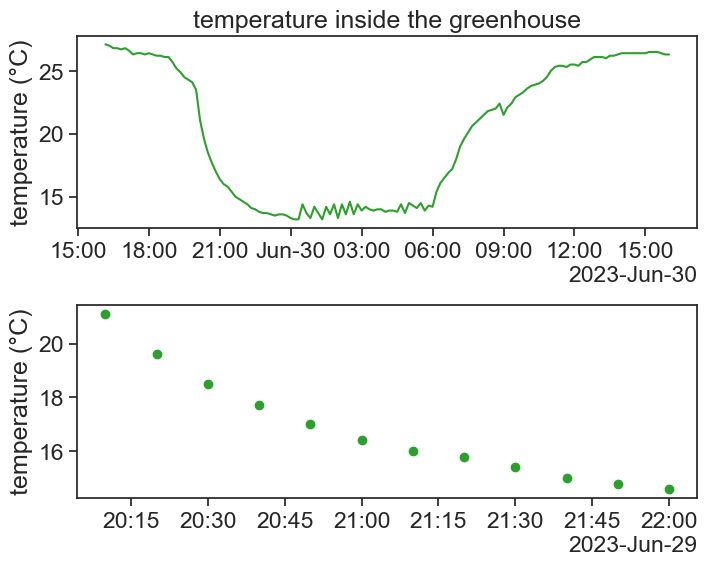

import numpy as npimport matplotlib.pyplot as pltimport pandas as pdimport altair as altfrom matplotlib.dates import DateFormatterimport matplotlib.dates as mdatesimport matplotlib.ticker as tickerfrom scipy.optimize import curve_fitimport seaborn as snssns.set(style="ticks", font_scale=1.5) # white graphs, with large and legible letters# avoid "SettingWithCopyWarning: A value is trying to be set on a copy of a slice from a DataFrame."pd.options.mode.chained_assignment =None# default='warn'# %matplotlib widget
Every evening, at 20:00, the air conditioning turns on, and we see a fast decrease in temperature:
chose one evening, plot it
df_fit = df['2023-06-29 20:10:00':'2023-06-29 22:00:00']fig, ax = plt.subplots(2, 1, figsize=(8,6))fig.subplots_adjust(hspace=0.4) # Adjust the vertical space between subplotsax[0].plot(df.loc['2023-06-29 16:10:00':'2023-06-30 16:00:00', 'T_in'], color='tab:green')ax[0].set(ylabel='temperature (°C)', title="temperature inside the greenhouse")ax[1].scatter(df_fit['T_in'].index, df_fit['T_in'], color='tab:green')ax[1].set(ylabel='temperature (°C)',)# formating dates on x axislocator = mdates.AutoDateLocator(minticks=7, maxticks=11)formatter = mdates.ConciseDateFormatter(locator)ax[0].xaxis.set_major_locator(locator)ax[0].xaxis.set_major_formatter(formatter)locator = mdates.AutoDateLocator(minticks=7, maxticks=11)formatter = mdates.ConciseDateFormatter(locator)ax[1].xaxis.set_major_locator(locator)ax[1].xaxis.set_major_formatter(formatter)

The AC is able to bring the temperature down, but up to a limit. The AC can work at a maximum given power, and the cooler it is outside, the more effectively the AC will be able to bring down the temperature inside the greenhouse. We can imagine that the AC behaves as an effective external environment to the greenhouse, and the greenhouse cools down according to Newton’s law of cooling:
\frac{dT}{dt} = r\cdot (T_{\text{env}}-T)
T= the greenhouse temperature
T_{\text{env}}= the outside environment temperature
r= coefficient of heat transfer.
The cooling rate is proportional to the difference in temperature between the inside and outside. Assuming T_{\text{env}} and r to be constant, the solution of this differential equation is:
We want to check if the temperature measured inside the greenhouse behaves like Newton’s law of cooling, and if so, what can we say about the cooling coefficient r and about T_{\text{env}}.
14.1 linear fit
The following is a very short introduction to curve fitting. The natural place to start is with a linear fit.
linear fit
# the "fit" process can't deal with datetimes# we therefore make a new column 'minutes', that will be used heredf_fit['minutes'] = (df_fit.index - df_fit.index[0]).total_seconds() /60# linear Fit (degree 1)degree =1coeffs = np.polyfit(df_fit['minutes'], df_fit['T_in'], degree)# linear Functionlinear_function = np.poly1d(coeffs)
see result of linear fit
fig, ax = plt.subplots(figsize=(8,5))ax.scatter(df_fit['minutes'], df_fit['T_in'], color='tab:green', label='data')ax.plot(df_fit['minutes'], linear_function(df_fit['minutes']), color='black', label='linear fit')ax.set(xlabel='minutes', ylabel='temperature (°C)', title="temperature inside the greenhouse")ax.legend(frameon=False)print(f"starting at {coeffs[1]:.2f} degrees,\nthe temperature decreases by {-coeffs[0]:.2f} degrees every minute.")
starting at 19.80 degrees,
the temperature decreases by 0.05 degrees every minute.
The line above is the “best” straight line that describes our data. Defining the residual as the difference between our data and our model (straight line),
e = T_{\text{data}} - T_{\text{model}},
the straight line above is the one that minimizes the sum of the squares of residuals. For this reason, the method used above to fit a curve to the data is called “least-squares method”.
Now let’s get back to our original assumption, that the greenhouse cools according to Newton’s cooling law. We can still use the least-squares method for any function we want!
define new function
def cooling(t, T_env, T0, r):""" t = time other stuff = parameters to be fitted """return T_env + (T0 - T_env)*np.exp(-r*t)
use scipy’s curve_fit
t = df_fit['minutes'].valuesy = df_fit['T_in'].valuesT_init = df_fit['T_in'][0]popt, pcov = curve_fit(f=cooling, # model function xdata=t, # x data ydata=y, # y data p0=(2, T_init, 0.5), # initial guess of the parameters )print(f"the optimal parameters are {popt}")
the optimal parameters are [14.01663586 21.0074623 0.02121802]
We can use curve fitting to retrieve important parameters from our data. Let’s write a function that executes the fit and returns two of the fitted parameters: T_env and r.
define function to retrieve parameters
def run_fit(data): data['minutes'] = (data.index - data.index[0]).total_seconds() /60 t = data['minutes'].values y = data['T_in'].values T_init = data['T_in'][0] popt, pcov = curve_fit(f=cooling, # model function xdata=t, # x data ydata=y, # y data p0=(2, T_init, 0.5), # initial guess of the parameters )return popt[0],popt[2]
We now apply this function to several consecutive evenings, and we keep the results in a new dataframe.
define function to retrieve parameters
df_night = df.between_time('20:01', '22:01', inclusive='left')# group by day and apply the function# this is where the magic happens.# if you are not familiar with "groupby", this will be hard to understandresult_series = df_night.groupby(df_night.index.date).apply(run_fit)# convert the series to a dataframeresult_df = pd.DataFrame(result_series.tolist(), index=result_series.index, columns=['T_env', 'r'])result_df.index = pd.to_datetime(result_df.index)result_df
T_env
r
2023-06-25
13.275540
0.019354
2023-06-26
13.331949
0.027034
2023-06-27
13.254827
0.018753
2023-06-28
13.392919
0.020449
2023-06-29
14.016636
0.021218
2023-06-30
13.807517
0.021749
2023-07-01
14.994207
0.023504
2023-07-02
14.314220
0.023705
2023-07-03
14.585848
0.019438
2023-07-04
14.377220
0.019504
2023-07-05
14.814939
0.021202
2023-07-06
14.667792
0.022264
2023-07-07
15.535115
0.024421
Show the code
fig, ax = plt.subplots(3,1,sharex=True, figsize=(8,8))ax[0].plot(df['T_in'], c='tab:blue', label='inside')ax[0].plot(df['T_out'], c='tab:orange', label='outside')ax[0].set(ylabel='temperature (°C)', title="actual temperatures", ylim=[10,45])# formating dates on x axislocator = mdates.AutoDateLocator(minticks=7, maxticks=11)formatter = mdates.ConciseDateFormatter(locator)ax[0].xaxis.set_major_locator(locator)ax[0].xaxis.set_major_formatter(formatter)ax[0].legend(ncol=2, loc='upper center', frameon=False)ax[1].plot(result_df['r'], color='black')ax[1].set(ylabel=r"parameter $r$", ylim=[0, 0.04])ax[2].plot(result_df['T_env'], color='black')ax2b = ax[2].twinx()ax2b.plot(df_night['T_out'].resample('D').mean(), color='tab:orange')ax[2].set(ylim=[12, 17])ax2b.set(ylim=[19, 24], ylabel='outside temperature')# color the xticksfor tick in ax[2].get_yticklabels(): tick.set_color('tab:orange')# color the xlabelax[2].set_ylabel(r'"outside" temp.'+'\ninferred from\nanalysis', color='tab:orange')
The cooling coefficient r seems quite stable throughout the two weeks of measurements. This probably says that the greenhouse and AC properties did not change much. For instance, the greenhouse thermal insulation stayed constant, and the AC power output stayed constant.
The AC tracks very well the outside temperature! This is to say: the AC works better (more easily) when temperatures outsides are low, and vice-versa.